Ⅲ、综合工具
1、AIDA64
（1）温度与功耗信息
- 计算机——传感器——温度/功耗
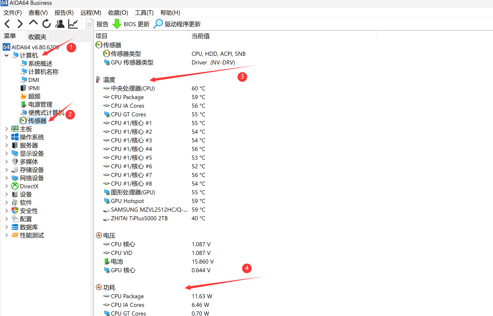
（2）内存与缓存测试
- 工具——内存与缓存测试——Start Benchmark
用于测试内存延迟、L3缓存写入减半故障、判断内存通道数。
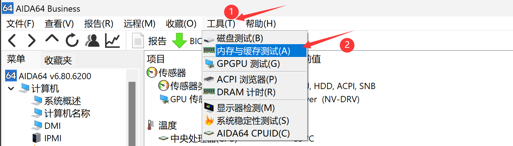
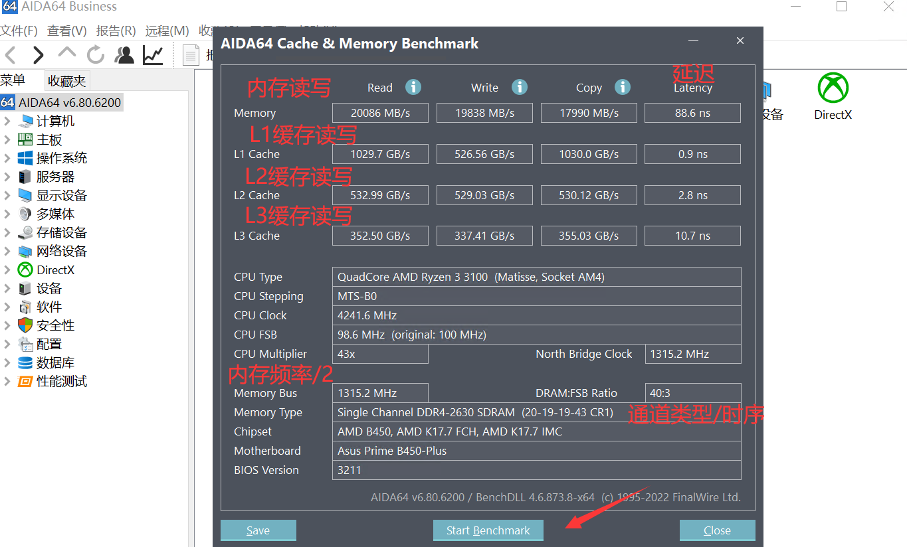
（3）压力测试/烤鸡
- 工具——系统稳定性测试——测试项目——Start
轻薄本选择Stress CPU，渲染本/全能本选择双烤CPU+GPU或单烤FPU，台式机选择FPU或FPU+GPU。推荐烤鸡时长，15-30分钟。CPU Throttling红色标识为过热降频，即PC散热能力有限。
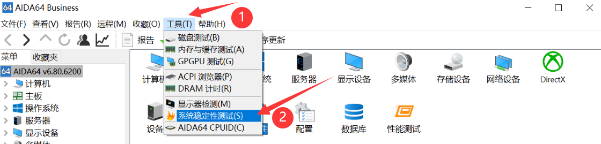
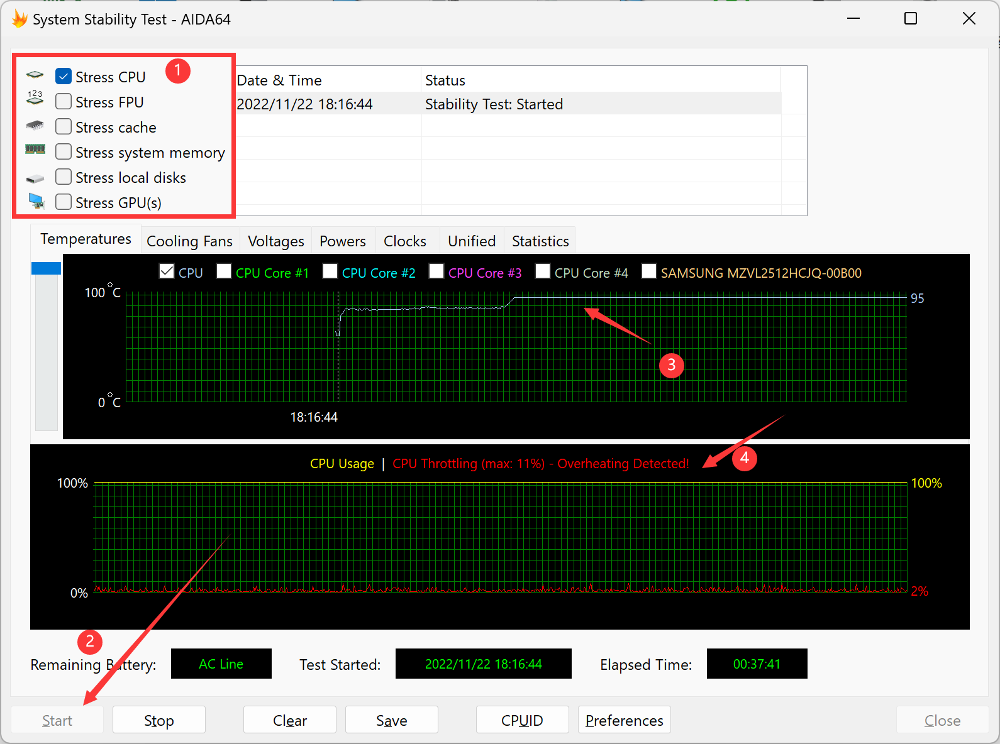
（4）桌面OSD显示
- 文件——设置——硬件监视工具——OSD——使用屏显面板显示
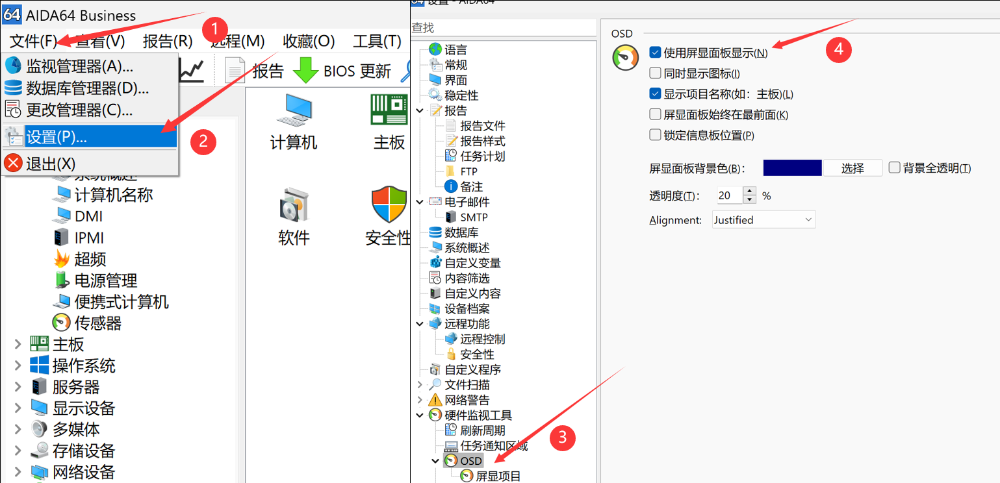
在左侧目录中选择屏显项目，右侧选择需要显示的项目，点击右下角应用即可显示
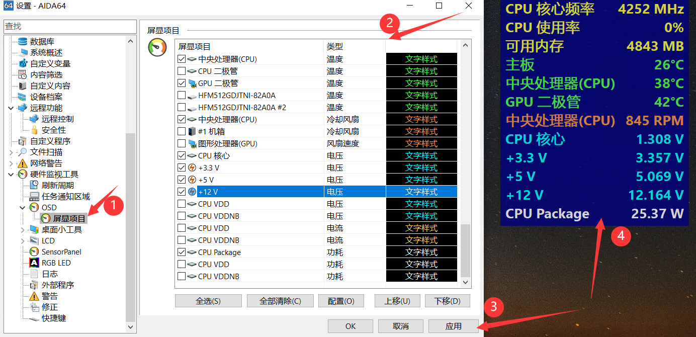
（5）RemoteSensor副屏监控
- 文件——设置——硬件监视工具——LCD——RemoteSensor——分辨率——启用RemoteSensor LCD支持——背景色——需要全屏的选中Maximize on double-click——应用
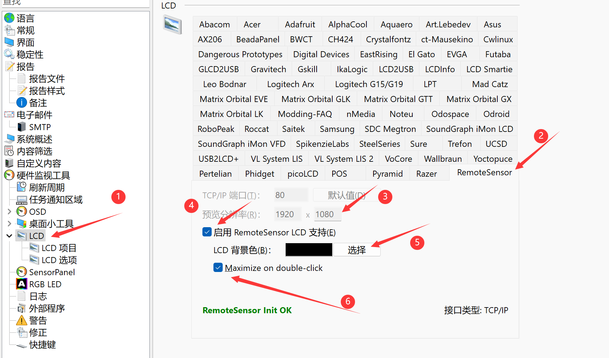
点击左侧LCD项目进入页面编辑。右上角可导入已保存的方案，右中控制各项目的移动，右下为项目新建/编辑/删除和图层顺序调整按钮。伸手党可以去AIDA64论坛上下载，B站也有大量教程。因时间关系本站不做修改和适配。监控屏文本缩放建议调为100%。
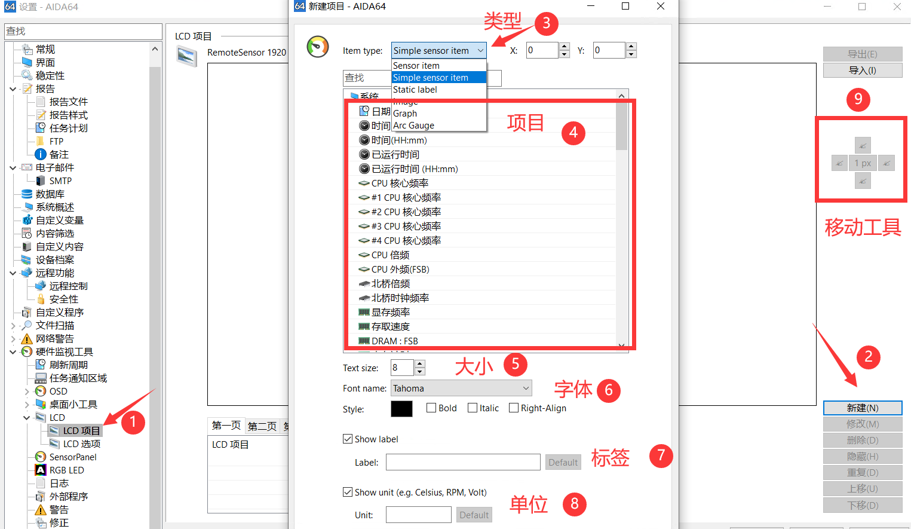
在浏览器中输入【127.0.0.1:端口号】（端口默认80无需输入）即可看到监控页面，在手机/pad等设备浏览器内输入【主机IP:端口号】也可以。在Wallpaper Engine中引用【http://主机IP:端口号】并设为直播模式可作为桌面显示。长期使用建议在设置中打开AIDA64的开启启动。
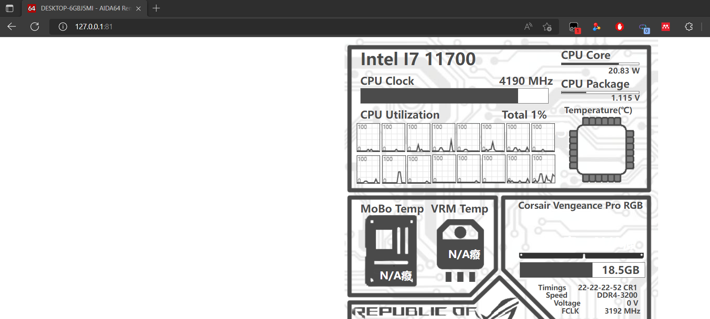
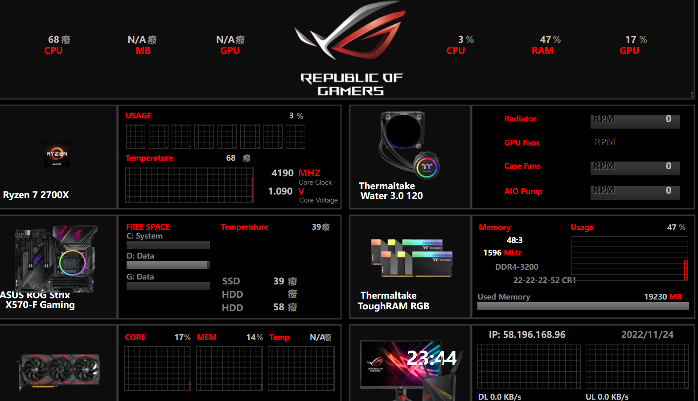
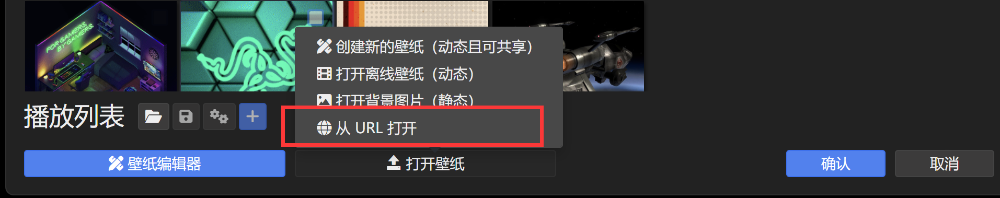
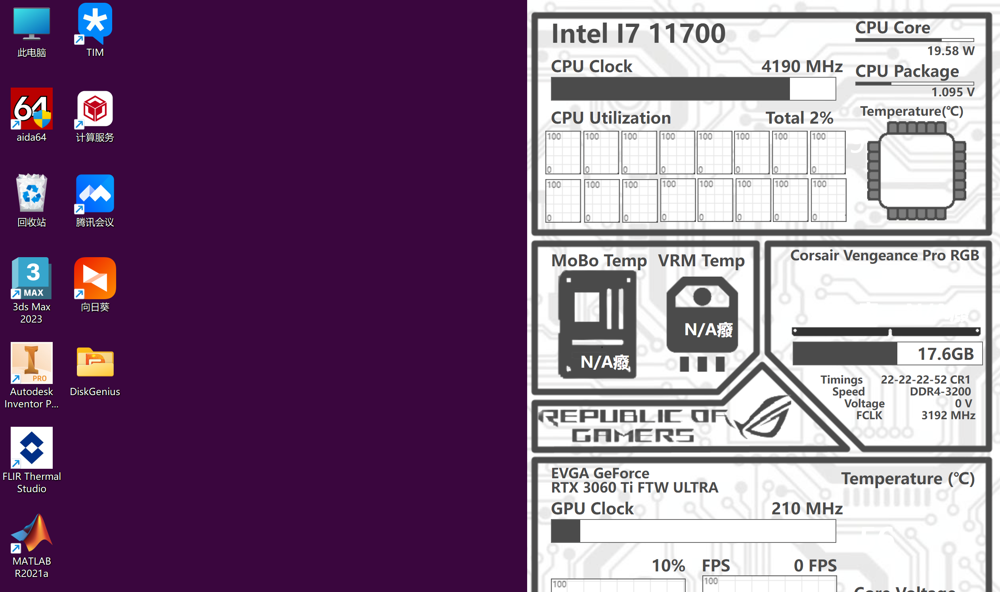
2、HWiNFO
（1）传感器状态
读取本机所有电压、温度、功耗、使用率、频率、磁盘Smart信息。以列表形式呈现。
![image-20221124235614077](imgs/image-20221124235614077.png
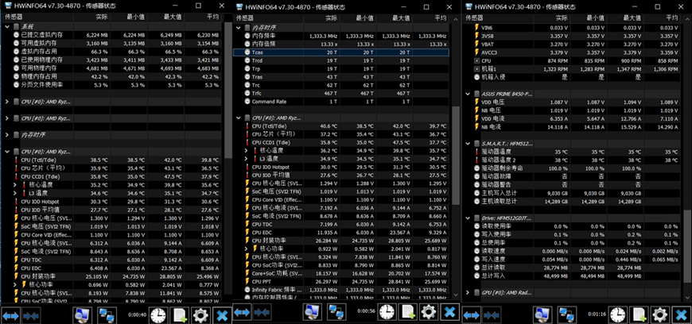
（2）系统概要
CPU、主板、内存、GPU的关键信息，以视窗形式呈现。
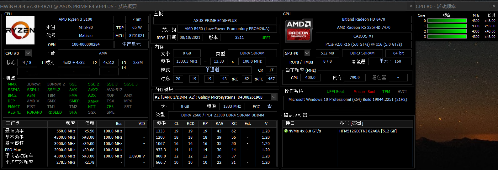
3、HWMonitor
4、Speccy
Piriform 的硬件信息查看工具，界面Win7风格，从摘要到各硬件分项信息一应俱全，薄纱鲁大师。
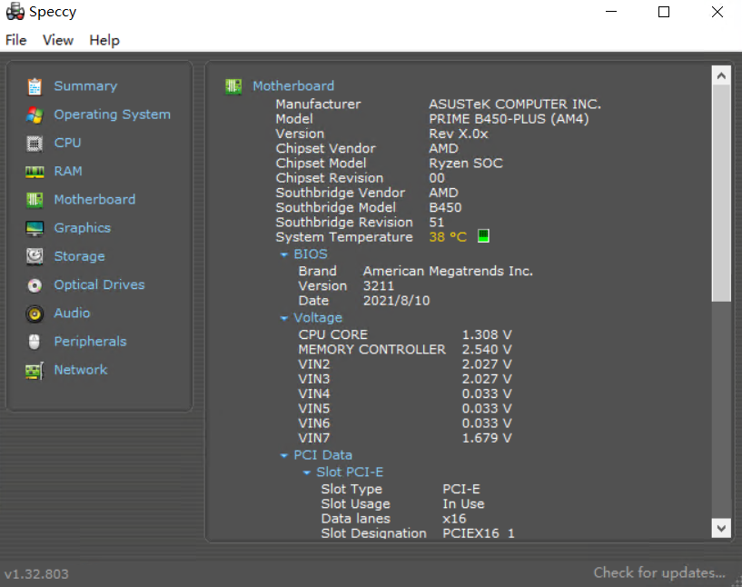
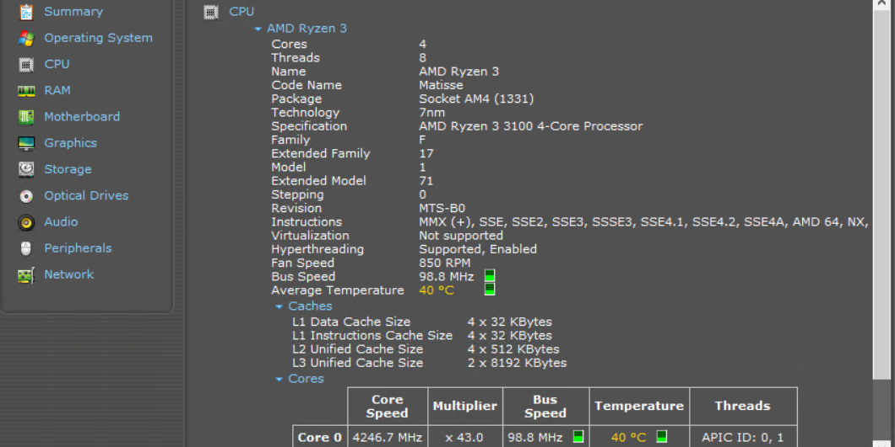
5、RWEverything
强大的硬件信息直接读取/修改工具，可直接访问PCI、内存、SPD、SMBus、CPU寄存器，可修改BIOS、内存信息。适用于有BIOS修改经验的玩家使用，滥用导致系统/硬件暴毙责任自负。
已于2017年停更，Win11上因安全策略问题无法使用。相似工具HE在Win11上也已暴毙。
未完待续……